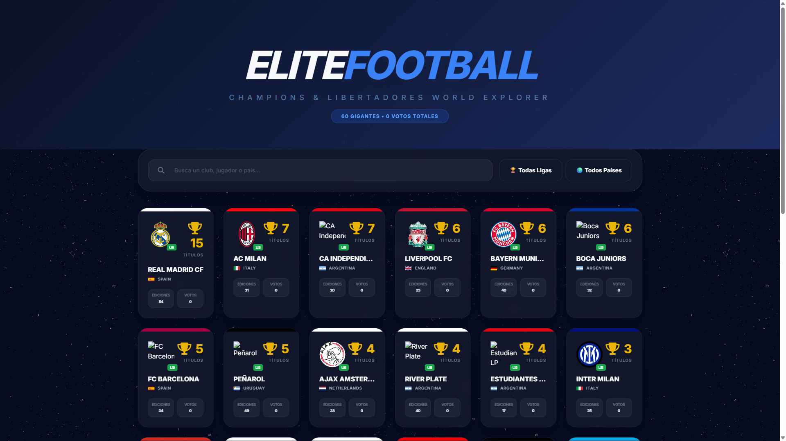
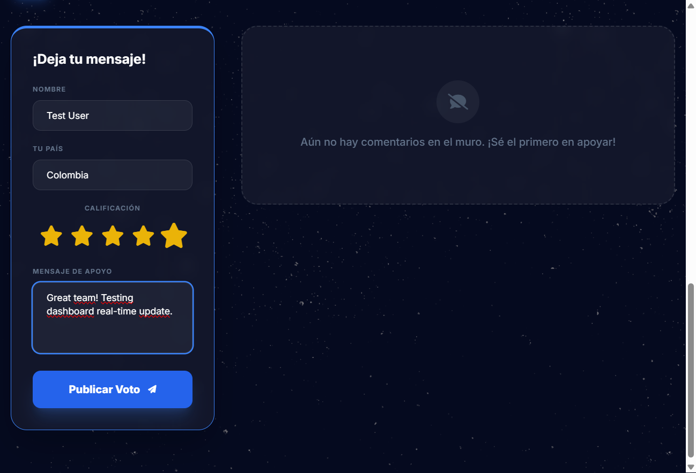
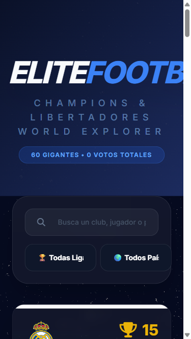

Story: Team Popularity Dashboard
URL: https://futbolbuggy.geekqa.net/
Timestamp: 2026-03-01 19:28
FAILED
4 Passed, 2 Failed, 2 Skipped
| Test Case | Status | Type | Evidence / Notes |
|---|---|---|---|
| Dashboard Visibility | PASSED | Functional |  |
| Data Display | PASSED | Functional | Team name, crest, and votes (0) displayed. |
| Sorting Verification | PASSED | Functional | Initial alphabetical/title sort correct while votes are 0. |
| Real-Time Update | FAILED | Functional | Error: "Error al enviar el comentario. Revisa la conexión con la base de datos."  |
| Sorting Re-ranking | FAILED | Functional | Counter did not update, re-ranking blocked. |
| Responsive Mobile (375px) | PASSED | Visual/Resp |  Minor text clipping in filters. |
| Handle Large Numbers | SKIPPED | Functional | Votes stuck at 0 due to DB error. |
| Broken Crest Image | PASSED | Functional | Primary team images loaded successfully. |
Status: FAILED